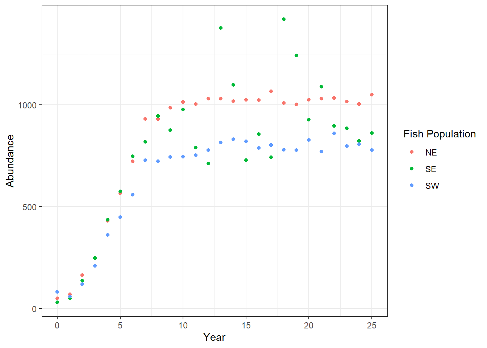
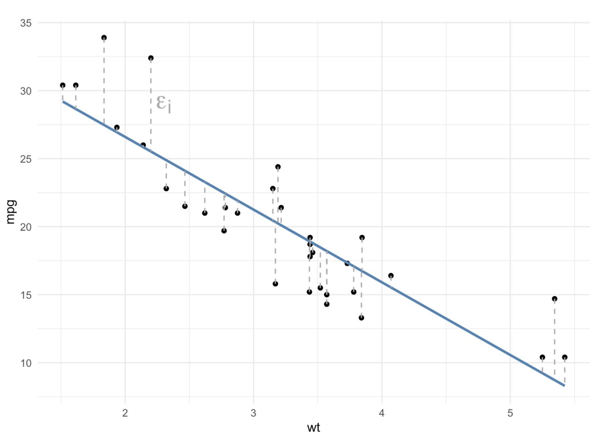
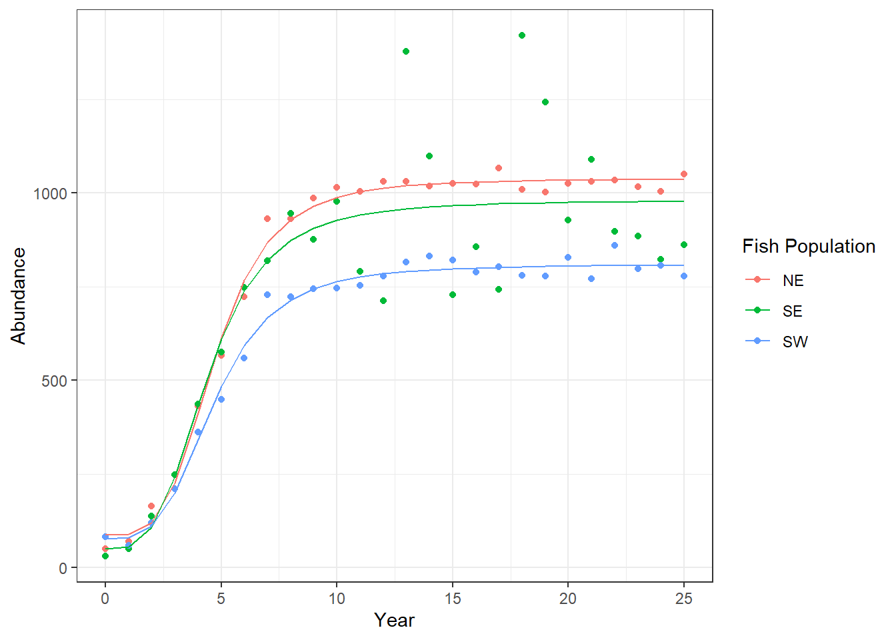

# Write your code here5.3: Comparing Populations
Comparing Populations
Learning Outcomes
- Students will be able to add logistic growth model curves to a
ggplot2visualization usingpredict()andgeom_line(). - Students will be able to estimate and compare carrying capacities across multiple populations.
- Students will be able to select and run an appropriate statistical test to compare mean population sizes across groups.
- Students will be able to make a data-driven recommendation about which population to fish.
Throughout this module, we have learned how populations demonstrating exponential growth and logistic growth differ from one another, both conceptually and visually.
While we have fit models to some of these populations (specifically, logistic growth models), we have done so in order to estimate the carrying capacity of the population rather than to use inferential statistics to determine if the populations are statistically significantly different from one another.
In this lesson, we are going to learn how to (a) add those logistic growth models to our data visualizations and (b) compare populations statistically.
Set Up
As always, we need to start by loading the packages we are going to use along with our data.
First, let’s load our packages. We are going to be using both the tidyverse and drc packages in this lesson, so we need to load both of them.
Then, load in our data “comparing_populations.csv” as pops.
Answer:
library(tidyverse)── Attaching core tidyverse packages ──────────────────────── tidyverse 2.0.0 ──
✔ dplyr 1.2.1 ✔ readr 2.2.0
✔ forcats 1.0.1 ✔ stringr 1.6.0
✔ ggplot2 4.0.3 ✔ tibble 3.3.1
✔ lubridate 1.9.5 ✔ tidyr 1.3.2
✔ purrr 1.2.2
── Conflicts ────────────────────────────────────────── tidyverse_conflicts() ──
✖ dplyr::filter() masks stats::filter()
✖ dplyr::lag() masks stats::lag()
ℹ Use the conflicted package (<http://conflicted.r-lib.org/>) to force all conflicts to become errorslibrary(drc)Loading required package: MASS
Attaching package: 'MASS'
The following object is masked from 'package:dplyr':
select
'drc' has been loaded.
Please cite R and 'drc' if used for a publication,
for references type 'citation()' and 'citation('drc')'.
Attaching package: 'drc'
The following objects are masked from 'package:stats':
gaussian, getInitialpops <- read_csv("data/comparing_populations.csv")Rows: 78 Columns: 3
── Column specification ────────────────────────────────────────────────────────
Delimiter: ","
chr (1): population
dbl (2): year, abund
ℹ Use `spec()` to retrieve the full column specification for this data.
ℹ Specify the column types or set `show_col_types = FALSE` to quiet this message.We can use the head() function to take a look at the data. What data do we have?
head(pops)# A tibble: 6 × 3
year abund population
<dbl> <dbl> <chr>
1 0 51 NE
2 1 70 NE
3 2 164 NE
4 3 248 NE
5 4 431 NE
6 5 567 NE After inspecting our dataset, it looks as though we have more time-series data of population abundances. It isn’t immediately clear how many populations there are, but perhaps the populations are named after their locations (“NE” could stand for “Northeast”).
Visually
Let’s first start our investigation of these populations by plotting the data points as a scatterplot.
As we have done throughout this module, we will want the variable representing time to be on the x-axis and the population abundance (N) on the y-axis.
We will also want the data points to be distinguished by which population they are from, so we need to specify the color argument within the aes() function.
ggplot(pops, aes(year, abund, color = population)) +
geom_point() +
labs(x = "Year",
y = "Abundance",
color = "Fish Population") +
theme_bw()
Interpretation
Based on the plot, what do you notice about these populations?
- Are they more likely exhibiting exponential or logistic growth? Why?
- How do the populations appear to differ from one another?
Given your answers to the questions above, what might be a good next step?
Instructor Note: All three populations show logistic growth. The NE population appears to reach the highest abundance, SW the lowest, with SE in between.
Students should suggest fitting logistic models to each population to estimate carrying capacities, then running a statistical test to compare them.
Numerically
When comparing different categories or groups (in this case, comparing different populations), we typically compare them both visually and numerically before conducting statistical tests.
Since we have already made visual comparisons, let’s compare the populations numerically.
Typically, we have compared groups with measures of central tendency and measures of variability. Do you think that is what we should do here? Why or why not?
Instructor Note: Not quite, calculating a mean across all time points would mix the growth phase with the stable phase and give a misleading number.
A better approach is to compare the carrying capacities from the logistic models. Once we restrict to the leveled-off period (year 15+), then comparing means with an ANOVA makes sense.
Separate Populations
Unlike our typical procedure, in order to fit logistic models to each population, our simplest way forward will be to create one data frame for each population.
NOTE: in case you are wondering, yes, there are definitely ways to fit a logistic model to each population without separating them! However, we would have to introduce quite a few new concepts to do so efficiently, so we are going to stick with the tried-and-true process of running the models individually.
We can use the filter function to select each population, one at a time.
pop_NE <- pops %>%
filter(population == "NE")
pop_SE <- pops %>%
filter(population == "SE")
pop_SW <- pops %>%
filter(population == "SW")Finding the Carrying Capacity
Now that we have data frames for each of the populations, we can fit the logistic model to each population and determine the estimate of the carrying capacity for each.
As we run the code to fit the model to each population, we might receive some warnings: “Warning :NaNs produced”. Don’t worry, that’s ok! Keep going!
# NE population
model_NE <- drm(abund ~ year, data = pop_NE, fct = LL.4())
model_NE
A 'drc' model.
Call:
drm(formula = abund ~ year, data = pop_NE, fct = LL.4())
Coefficients:
b:(Intercept) c:(Intercept) d:(Intercept) e:(Intercept)
-3.883 86.783 1037.664 4.725 # if you want to be fancy and save the carrying capacity as an object
# this code combines several steps from the last lesson into one step
K_NE <- unname(coef(model_NE)[3])
K_NE[1] 1037.664Now we can do the same for the SE and SW populations, too.
# SE population
model_SE <- drm(abund ~ year, data = pop_SE, fct = LL.4())
model_SE
A 'drc' model.
Call:
drm(formula = abund ~ year, data = pop_SE, fct = LL.4())
Coefficients:
b:(Intercept) c:(Intercept) d:(Intercept) e:(Intercept)
-3.461 51.099 979.889 4.432 K_SE <- unname(coef(model_SE)[3])
K_SE[1] 979.8889# SW population
model_SW <- drm(abund ~ year, data = pop_SW, fct = LL.4())
model_SW
A 'drc' model.
Call:
drm(formula = abund ~ year, data = pop_SW, fct = LL.4())
Coefficients:
b:(Intercept) c:(Intercept) d:(Intercept) e:(Intercept)
-3.561 77.048 809.384 4.695 K_SW <- unname(coef(model_SW)[3])
K_SW[1] 809.3843Let’s record the carrying capacity estimates for each population here so we can refer back to them later, if needed.
| Population | Carrying Capacity |
|---|---|
| NE | 1037.7 |
| SE | 979.9 |
| SW | 809.4 |
As we saw in the plot, the estimated carrying capacity for the SW population is below that of the NE population.
What was much more challenging to see clearly in the plot, however, is that the estimated carrying capacity of the SE population is in between the other two carrying capacities, albeit closer to the NE population.
Plotting the Logistic Model Curves
We can add the logistic growth models that we fit to each population into our ggplot to more easily compare the curves.
To do so requires a few steps.
Use the
predict()function to get the values for the “logistic line of best fit.” Remember, these will not match up perfectly with our actual, observed values; these are the y-axis orabundancevalues for the best fitting logistic model at each observed x-axis value, or year.Use the
mutate()function to create a new column in each data frame with these logistic model values.Combine all three dataframes back together into one dataframe using the
bind_rows()function.Plot the actual data points using
geom_point()and plot the logistic model data points using thegeom_line()function.
Add the Logistic Model Points to the Dataframes
First, let’s see what output the predict() function gives us for the NE population.
predict(model_NE) [1] 86.78322 89.06604 119.38057 225.89179 413.57407 614.17858
[7] 768.12217 867.83669 928.66760 965.64167 988.57434 1003.20806
[13] 1012.82831 1019.33476 1023.85133 1027.06115 1029.39090 1031.11414
[19] 1032.41057 1033.40091 1034.16792 1034.76945 1035.24658 1035.62899
[25] 1035.93841 1036.19096If we compare these numbers to the numbers in the abund column of pop_NE, we notice that they are not the same. The difference between these values from the model of best fit and the actual, observed values are called residuals, just as they are with lines of best fit (from linear regressions).

Let’s use the mutate function to add these model values to each dataframe.
pop_NE <- pop_NE %>%
mutate(logistic_model = predict(model_NE))
pop_NE# A tibble: 26 × 4
year abund population logistic_model
<dbl> <dbl> <chr> <dbl>
1 0 51 NE 86.8
2 1 70 NE 89.1
3 2 164 NE 119.
4 3 248 NE 226.
5 4 431 NE 414.
6 5 567 NE 614.
7 6 723 NE 768.
8 7 931 NE 868.
9 8 931 NE 929.
10 9 987 NE 966.
# ℹ 16 more rowspop_SE <- pop_SE %>%
mutate(logistic_model = predict(model_SE))
pop_SW <- pop_SW %>%
mutate(logistic_model = predict(model_SW))Combine Dataframes
We can now bring all three individual data frames back together into one data frame using a function called bind_rows(). You can think of bind_rows as gluing the data frames together, one after another.
The arguments in the bind_rows() function are all of the data frames we want glued together.
pops_models <- bind_rows(pop_NE, pop_SE, pop_SW)
pops_models# A tibble: 78 × 4
year abund population logistic_model
<dbl> <dbl> <chr> <dbl>
1 0 51 NE 86.8
2 1 70 NE 89.1
3 2 164 NE 119.
4 3 248 NE 226.
5 4 431 NE 414.
6 5 567 NE 614.
7 6 723 NE 768.
8 7 931 NE 868.
9 8 931 NE 929.
10 9 987 NE 966.
# ℹ 68 more rowsThe resulting data frame again has 78 observations, as did the original pops data frame.
Add Logistic Models to the Plot
We can now add the logistic models to our plot using the geom_line() function. Specifically, the values from the logistic_model column will be the y-axis values for the lines we are adding; the x-axis values are the same as the overall plot: year.
ggplot(pops_models, aes(x = year, y = abund, color = population)) +
geom_point() +
geom_line(aes(y = logistic_model)) +
labs(x = "Year", y = "Abundance", color = "Fish Population") +
theme_bw()
It is now much easier to visually distinguish the differences between the growth curves and the carrying capacities between the three populations!
Statistically
We still want to analyze our three populations using inferential statistics to determine if there are significant differences between the populations.
First, we need to decide what type of statistical test makes sense with the data we have. This is not a straight-forward question with a straight-forward answer. How we determine which test to use ultimately depends on the question we are asking and, therefore, the hypothesis we are testing.
For the sake of the class (and in your assignment, too), let’s assume the question we want to ask is whether the average population sizes significantly differ between the populations.
What type of statistical test should we use to answer that question?
What would the null and alternative hypotheses be for that statistical test?
Instructor Note: An ANOVA. We have one numeric dependent variable (abundance) and one categorical independent variable (population) with three groups.
- Null hypothesis: The mean abundance is the same across all three populations during the leveled-off period.
- Alternative hypothesis: At least one population has a significantly different mean abundance.
Filtering the Data
To most accurately compare the populations, we likely want to restrict the comparison to when the populations (or the models of best fit, at least) are fairly leveled off.
(Again, this is more of an estimation than an exact science, though there are more precise and complicated tools that could be used.)
A rough estimation would be that the models mostly level off around year 15; let’s filter our data to include only abundance from year 15 and later.
pops_15_25 <- pops_models %>%
filter(year >= 15)
pops_15_25# A tibble: 33 × 4
year abund population logistic_model
<dbl> <dbl> <chr> <dbl>
1 15 1026 NE 1027.
2 16 1024 NE 1029.
3 17 1067 NE 1031.
4 18 1010 NE 1032.
5 19 1003 NE 1033.
6 20 1026 NE 1034.
7 21 1031 NE 1035.
8 22 1034 NE 1035.
9 23 1016 NE 1036.
10 24 1004 NE 1036.
# ℹ 23 more rowsRunning the Statistical Analysis
Now that we have filtered our data, we can conduct our statistical test.
model_aov <- aov(abund ~ population, data = pops_15_25)
summary(model_aov) Df Sum Sq Mean Sq F value Pr(>F)
population 2 291562 145781 9.335 0.000704 ***
Residuals 30 468491 15616
---
Signif. codes: 0 '***' 0.001 '**' 0.01 '*' 0.05 '.' 0.1 ' ' 1This p-value tells us that the overall model is significant (we reject the null hypothesis), but it doesn’t tell us which populations are significantly different from one another. To determine which populations differ from each other, we need to run post hoc pairwise-comparisons.
TukeyHSD(model_aov) Tukey multiple comparisons of means
95% family-wise confidence level
Fit: aov(formula = abund ~ population, data = pops_15_25)
$population
diff lwr upr p adj
SE-NE -74.45455 -205.8177 56.90861 0.3550427
SW-NE -225.90909 -357.2722 -94.54593 0.0005622
SW-SE -151.45455 -282.8177 -20.09139 0.0211521How do we interpret these results? What are our conclusions?
Instructor Note: The ANOVA is significant (p = 0.000704), meaning at least one population differs from the others. The Tukey HSD breaks it down:
- NE vs SE: not significantly different (p = 0.355)
- NE vs SW: significantly different (p = 0.0006) NE has higher abundance
- SE vs SW: significantly different (p = 0.021) SE has higher abundance
Conclusion: SW is significantly lower in abundance than both NE and SE. NE and SE are statistically similar to each other, but NE has a slightly higher carrying capacity.
Data-Driven Decision Making
Our ultimate goal in this module has been to determine which population of fish is best for fishing sustainably. We are prioritizing large, stable populations.
Given those requirements and what our numeric, visual, and statistical tests have told us, which of these populations would be the best for us to harvest? Why?
Instructor Note: NE is the best choice, it has the highest carrying capacity and is significantly more abundant than SW.
SE is also a reasonable choice since it is not statistically different from NE and has a substantially higher carrying capacity than SW.
SW should be avoided: it is significantly less abundant than the other two and has the lowest carrying capacity, so it is least able to withstand fishing pressure.
References
Golding, J.; Andersen, D.; Bledsoe, E. (2024). Data-Driven Decision-Making: Antarctic Fisheries. Teaching Ecology for All Undergraduate Audiences, QUBES Educational Resources. doi:10.25334/YECE-7M02